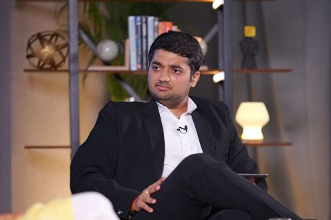

I build the first version, bring people together, and move the work forward.
From a Cairo agency and rural field operations to AI prototypes and a national case competition, I've worked across product, growth, research, and execution. I'm looking for a Founder's Office internship where that range is useful.

Moderating a fireside chat at Masters' Union
Scroll, swipe or press → to ride one stop
Sri Krishna Taak
I build the first version, bring people together, and move the work forward.
From a Cairo agency and rural field operations to AI prototypes and a national case competition, I've worked across product, growth, research, and execution. I'm looking for a Founder's Office internship where that range is useful.
Detail: ResumeFit: a résumé tool that cannot invent
Detail
ResumeFit: a résumé tool that cannot invent
Role
Builder
Built with
Claude (AI-assisted development)
Status
I have since left the project. The site is still online.
ResumeFit rebuilds a résumé around one job posting using only what the user has done, and reports the requirements they cannot honestly claim. I built it with Claude and launched it in November 2026. I have since left the project.
What I built
Sign-up with email confirmation, PDF and Word résumé import into a structured profile, a tailoring pipeline, a match report, five résumé templates, chat refinement, an application tracker, and a free keyword checker that needs no account.
The guardrail, enforced three times
The prompt lets the model cite only fact ids it was given, and every number must appear in a cited fact.
A validator drops bullets without valid citations, restores your own wording when a number was invented, removes skills that are not in your profile, and turns unsupported matches into gaps.
The database re-checks every citation before a version is saved.
From the project README. The repository is private, so this is documented, not publicly inspectable.
Product Hunt launch graphic with sample text. It illustrates the rule; it is not a real user's résumé.The app's résumé view with a fictional profile and test data.
A product decision
7 Nov 2026First commit. A $4, 30-day pass was part of the design.
About 12 NovProduct Hunt launch with one free preview, then $4 for 30 days.
14 NovI paused payments and made the product free during the beta.
I made it free because the paid pass was not converting. The dates come from the commit history. The Product Hunt listing shows that it shipped; I have no paying users or traction numbers to report.
Detail: CaseUnion 4.0: a national case competition
Detail
CaseUnion 4.0: a national case competition
Role
VP Careers
Where
Masters' Union, Gurugram
Dates
Festival 15 Nov to 14 Dec 2026; finale 12 Dec
Helped grow CaseUnion 4.0 to 3,800+ registrations by 23 November 2026. This is a dated snapshot while registration was open, not a final outcome, and it is the team's result.
Crop of the 23 Nov 2026 event creative. The partner labels are the creative's own.
What I did
As VP Careers, I coordinated student clubs, partner outreach, sponsors, and campus teams. The creative lists me as the registration contact, as CaseUnion Head and VP Careers. The registrations, the partners and the competitions belong to the whole team.
What the figures are
3,800+ is the entry count on the event creative of 23 Nov 2026. The Unstop event page showed 4,745 registrations when I read it on 25 Nov 2026, after registrations closed on 23 Nov. Both are snapshots; the finale is on 12 Dec.
The ₹5 lakh is the festival's prize pool. I did not raise it and it is not mine.
Partner roles are as the creative labels them. I do not claim any partner's employer endorsed the event beyond that.
Separate from CaseUnion
As elected Vice President, I was also part of the broader Careers Club term: 40 events in 5 months across 13 clubs on a ₹25 lakh budget, including three full-day hackathons (two on AI) and 400,000+ impressions. These are club figures from my résumé, not part of the CaseUnion count and not a personal result.
Helped grow CaseUnion 4.0 to 3,800+ registrations by 23 November 2026. This is a dated snapshot while registration was open, not a final outcome, and it is the team's result.
Crop of the 23 Nov 2026 event creative. The partner labels are the creative's own.
What I did
As VP Careers, I coordinated student clubs, partner outreach, sponsors, and campus teams. The creative lists me as the registration contact, as CaseUnion Head and VP Careers. The registrations, the partners and the competitions belong to the whole team.
What the figures are
3,800+ is the entry count on the event creative of 23 Nov 2026. The Unstop event page showed 4,745 registrations when I read it on 25 Nov 2026, after registrations closed on 23 Nov. Both are snapshots; the finale is on 12 Dec.
The ₹5 lakh is the festival's prize pool. I did not raise it and it is not mine.
Partner roles are as the creative labels them. I do not claim any partner's employer endorsed the event beyond that.
Separate from CaseUnion
As elected Vice President, I was also part of the broader Careers Club term: 40 events in 5 months across 13 clubs on a ₹25 lakh budget, including three full-day hackathons (two on AI) and 400,000+ impressions. These are club figures from my résumé, not part of the CaseUnion count and not a personal result.
I have since left the project. The site is still online.
ResumeFit rebuilds a résumé around one job posting using only what the user has done, and reports the requirements they cannot honestly claim. I built it with Claude and launched it in November 2026. I have since left the project.
What I built
Sign-up with email confirmation, PDF and Word résumé import into a structured profile, a tailoring pipeline, a match report, five résumé templates, chat refinement, an application tracker, and a free keyword checker that needs no account.
The guardrail, enforced three times
The prompt lets the model cite only fact ids it was given, and every number must appear in a cited fact.
A validator drops bullets without valid citations, restores your own wording when a number was invented, removes skills that are not in your profile, and turns unsupported matches into gaps.
The database re-checks every citation before a version is saved.
From the project README. The repository is private, so this is documented, not publicly inspectable.
Product Hunt launch graphic with sample text. It illustrates the rule; it is not a real user's résumé.The app's résumé view with a fictional profile and test data.
A product decision
7 Nov 2026First commit. A $4, 30-day pass was part of the design.
About 12 NovProduct Hunt launch with one free preview, then $4 for 30 days.
14 NovI paused payments and made the product free during the beta.
I made it free because the paid pass was not converting. The dates come from the commit history. The Product Hunt listing shows that it shipped; I have no paying users or traction numbers to report.